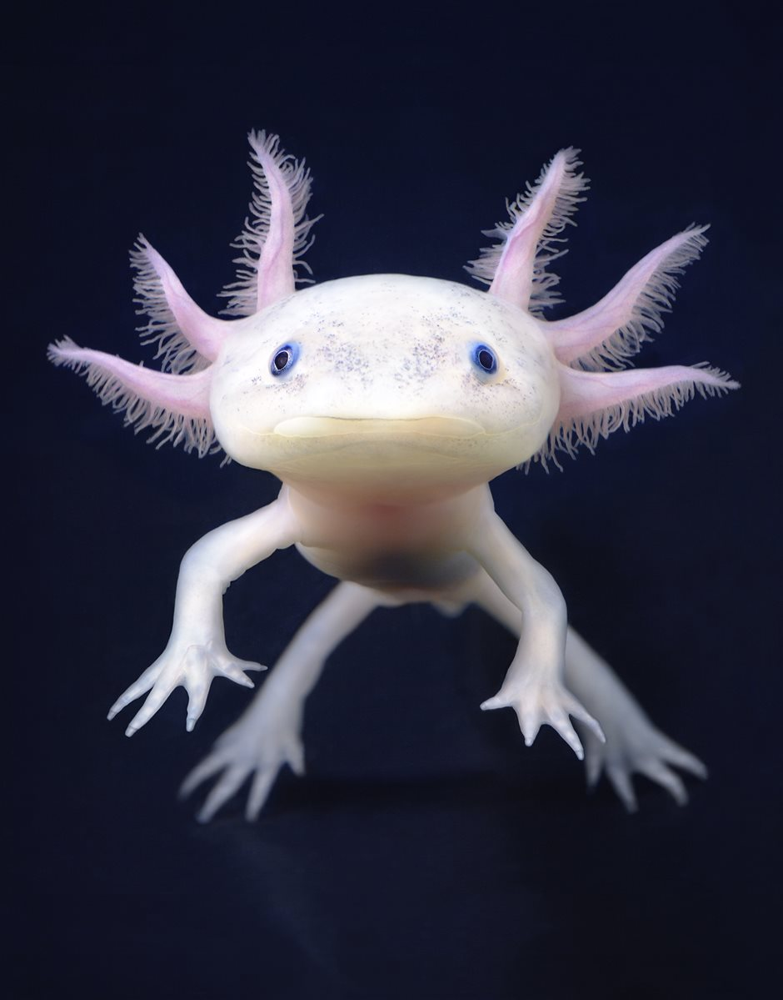

Desde que la vida surgió en la Tierra, la fauna que ha habitado en ella ha cambiado en muchas ocasiones. Durante sus miles de años de existencia y por diversas razones, se han producido cinco grandes extinciones de las especies que han
poblado la Tierra: son las conocidas como las cinco extinciones masivas. En la actualidad, y debido a la acción de los seres humanos, el planeta está al borde de los que los científicos denominan la Sexta Gran Extinción. Pero, ¿es
realmente un problema tan grave?

¿Cuándo se considera una especie en peligro de extinción?
Se considera que una especie está en peligro de extinción cuando todos los representantes de la misma corren el riesgo de desaparecer de la faz de la Tierra.
¿Cuántos animales están en peligro de extinción?
Según datos de la Unión Internacional para la Conservación de la Naturaleza (UICN), el organismo internacional con mayor potestad sobre el problema, aproximadamente 5.200 especies de animales se encuentran en peligro de extinción en la
actualidad. Además, en un desglose por clase, se encuentran en peligro de extinción el 11% de las aves, el 20% de los reptiles, el 34% de los peces y 25% de los anfibios y mamíferos.
¿Cuándo se considera una especie en peligro de extinción?
Se considera que una especie está en peligro de extinción cuando todos los representantes de la misma corren el riesgo de desaparecer de la faz de la Tierra.

¿Cuántos animales están en peligro de extinción?
Según datos de la Unión Internacional para la Conservación de la Naturaleza (UICN), el organismo internacional con mayor potestad sobre el
problema, aproximadamente 5.200 especies de animales se encuentran en peligro de extinción en la actualidad. Además, en un desglose por clase, se encuentran en peligro de
extinción el 11% de las aves, el 20% de los reptiles, el 34% de los peces y 25% de los anfibios y mamíferos.
Causas de que los animales estén en peligro de extinción
Existen múltiples causas por las que una especie puede llegar a encontrarse al borde de la extinción. Las razones pueden resultar
tremendamente particulares para cada especie, pero en líneas generales, entre las mayores amenazas se encuentra la destrucción y
fragmentación de sus hábitats; el cambio climático; la caza y tráfico ilegal; y la introducción de especies exóticas.
¿Cómo evitar la extinción de especies?
Conseguir que una especie deje de estar en peligro de extinción no es una tarea fácil. Evitar que una especie desaparezca implica la
puesta en marcha de una gran cantidad de recursos y acciones concretas. Algunas de ellas serían evitar la fragmentación de sus hábitats
, por ejemplo la deforestación; perseguir y castigar con dureza la caza ilegal y el tráfico de especies; la creación de reservas naturales;
o el fomento de programas de reproducción, reintroducción y de mejora genética. La lucha contra la contaminación y el cambio climático también
es la lucha por la conservación de muchos animales. Cada decisión personal tiene una consecuencia a nivel global en múltiples aspectos, de ahí
la importancia de la concienciación social de la población para luchar contra la pérdida de biodiversidad.